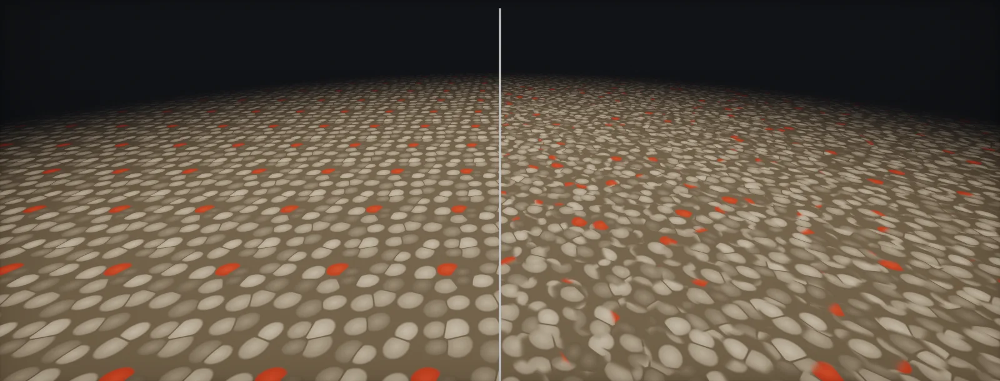

Texture and Cell Bombing
Why tiling shows, random offsets per cell, texture bombing and Voronoi cell bombing, hex tiling and histogram-preserving blending, gradients that keep cell borders clean, normal maps in rotated cells, and what it all costs against cheaper alternatives, built in Unity HDRP and Unreal.

Why tiling shows
A tiling texture is a cheap way to cover a large surface at high density, but the eye is very good at finding repetition. It needs only a few copies in view and one feature that stands out: a dark stone, a bright crack, a stain. The problem grows with the area in view, so it is worst on terrain, floors, large walls and seen from a distance:
Two ways around it. Make the texture itself less memorable (no stand-out features, even contrast, larger tiles), and break the grid in the shader: change the texture coordinates per region so neighbouring copies differ. That second family is called texture bombing, cell bombing, stochastic or anti-tiling sampling. All of it costs extra texture samples, so it is usually applied only to the maps that show the repetition.
Random offsets per cell
The simplest version splits UV space into cells, the size of one tile, and shifts the texture by a random offset per cell, from a hash of the cell's integer coordinates. On its own that leaves a hard seam at every cell border. Inigo Quilez's first technique reads the texture with the offsets of the four nearest cells and blends them with a smoothstep, so the borders dissolve:
Random mirroring per cell (flipping U or V) increases the variation for almost no cost; random rotation does too, but needs the normal map to be rotated back (normals). Wide blends hide the borders but mix several copies, which blurs details and lowers contrast in those zones: the general weakness of linear blending of textures, which the next techniques reduce.
Texture bombing and cell bombing
Texture bombing, as described in GPU Gems (2004), places small images on a grid of cells: each cell drops one or more copies of an image at a random position, with a random priority, scale or colour, and each pixel checks the neighbouring cells for copies that reach it: 9 cells if images may cross into any neighbour, 4 if they are kept to one side. The same loop gives Voronoi cells: keep the nearest feature point instead of the highest priority. The chapter's examples needed 8 texture samples and 44–62 instructions per pixel.
For whole surfaces, the Voronoi variant is the useful one, and it is what cell bombing usually means in a shader: each Voronoi cell gets its own random UV offset (and possibly rotation), and the pixel blends the nine surrounding cells by distance to their feature points. Quilez's second technique weighs them with exp(−k·d²) and divides by the total weight so the brightness stays right:
Voronoi cells have no grid direction, so they hide repetition better than square cells. Nine samples per map is expensive, though, which is why hex tiling, which gets a similar result from three, has largely replaced it.
Hex tiling
Morten Mikkelsen's hex tiling (JCGT 2022) places the texture copies on a lattice of hexagons. Every point lies inside one triangle of the dual triangle grid, so it is covered by exactly three hex tiles: three samples, each with a random offset (and optionally a rotation), blended by the point's barycentric weights. Two refinements make the blend look less washed out. The weights are raised to a power (γ = 7 in the paper), which narrows the blend zones, and multiplied by the luminance of each sample (or the slope of each normal), so bright, prominent features win over flat background instead of averaging into grey. An optional contrast curve sharpens the transitions further:
Hex tiling is a practical form of the histogram-preserving blending of Heitz and Neyret (2018). Their method transforms the texture so its values follow a Gaussian distribution, blends three samples in that space with variance-preserving weights, and maps the result back with a lookup table; this keeps the contrast and the histogram of stochastic textures (gravel, sand, grain) almost perfectly. It needs a precomputed transformed texture and lookup table per input, and Unity's prototype implementation generated two intermediate textures per input for that. Mikkelsen's version samples the original texture directly, so it drops into any shader; the paper reports nearly identical results on normal maps and an acceptable difference on colour. Rotation per tile is possible only without histogram preservation, because rotated samples are directional.
Gradients: no seams at cell borders
Every one of these techniques gives neighbouring pixels very different UVs where they fall into different cells. The GPU picks the mip level from the UV difference between neighbouring pixels, so at every cell border it sees a huge change and reads a tiny, blurred mip:
The fix is the same everywhere: compute ddx(uv) and ddy(uv) once from the original, continuous UV, and pass them to every sample with SampleGrad (HLSL) or textureGrad (GLSL). With rotation, rotate the two gradient vectors by the same angle as the UV. Offsets and mirroring leave the gradient's length unchanged, so the unmodified gradients are correct for them.
Normal maps in rotated and blended cells
A normal map stores directions relative to the texture's U and V axes. When a cell reads the texture rotated or mirrored, the normals it returns are rotated or mirrored with it, and the bumps light from the wrong side. Before blending, each sample's tangent-space normal must be turned back by the cell's rotation and mirroring. Then blend the three or four normals as surface gradients (the normal's slope, −xy / z), which adds bumps the way height maps add, instead of averaging the vectors, which flattens them:
// A tangent-space normal read from a rotated (and optionally mirrored) cell must be turned back
// into the surface's tangent frame before it is blended with the others.
float3 UnrotateNormal(float3 nTS, float angle, float2 mirror) // mirror = (+1 or -1, +1 or -1)
{
nTS.xy *= mirror; // undo the mirroring of U and V
float c = cos(angle), s = sin(angle);
nTS.xy = float2(c * nTS.x - s * nTS.y, // undo the rotation of the UVs
s * nTS.x + c * nTS.y);
return nTS;
}
// Blend normals as surface gradients (derivatives), not as vectors:
float2 ToDeriv(float3 n) { return -n.xy / max(n.z, 1e-3); }
float3 FromDeriv(float2 d) { return normalize(float3(-d, 1)); }
// n = FromDeriv(w1 * ToDeriv(n1) + w2 * ToDeriv(n2) + w3 * ToDeriv(n3));
Offset-only variants (no rotation, no mirroring) need neither step for the direction; the gradient blend is still better than a plain average.
Cost and cheaper alternatives
Anti-tiling multiplies the samples of every map it is applied to, for every layer that uses it:
| Technique | Samples per map | Precomputation | Look |
|---|---|---|---|
| Random offset per cell, hard borders | 1 | None | Visible seams on a grid |
| Two versions of the pattern blended by a noise (Quilez, technique 3) | 2 + 1 small noise lookup | None | Cheap; repetition at a larger scale remains |
| Hex tiling (Mikkelsen 2022) | 3 | None | Good for most textures, rotation possible |
| Histogram-preserving blending (Heitz & Neyret 2018) | 3 + a lookup table | Gaussianised texture and inverse lookup table per input | Keeps contrast best on stochastic textures (gravel, sand, noise) |
| Random offset per cell, blended (Quilez, technique 1) | 4 | None | Smooth, some blurring in the blend zones |
| Voronoi cell bombing (Quilez, technique 2) | 9 | None | Organic cells; the most expensive |
Cheaper tools often solve most of the problem first:
- Macro variation: one low-resolution texture or noise at a much larger scale that varies colour, roughness and the blend between materials. One extra sample for the whole material.
- Detail maps: a second tiling texture at a different scale on top of the base (detail maps).
- Several tiling scales whose repeats do not line up, blended by masks (detail that does not repeat).
- Decals and props that break up the most visible areas.
Use bombing where those are not enough, typically on the colour and normal of large ground materials, and fade it out at a distance where the repetition is hidden by the macro variation anyway.
Build it in Unity HDRP
One HLSL file adds three anti-tiling reads to any Shader Graph: the four-sample offset blend, hex tiling for colour and masks, and hex tiling for normal maps. Written for Unity 6 with HDRP 17; Unity 2022 LTS works the same apart from a few renamed menu entries.
- Put
TileBreak.hlslinAssets/Shaders/. Create the graph: in the Project window, Create > Shader Graph > HDRP > Lit Shader Graph. Open it and check the Graph Inspector > Graph Settings. Add properties: Texture2DBaseMap, Texture2DNormalMap(Mode: Normal Map), FloatsTiling(4),Rotation(0–1, default 0.3),Contrast(0.5–0.9, default 0.7),NormalStrength(1). - UV: UV node (UV0) ×
Tiling. For ground meshes without UVs, use Position (World) .xz × Tiling instead. - Colour: In the graph, add a Custom Function node. Set Type to
File, Source toTileBreak.hlsland Name toTileBreakHex(without the_floatsuffix). Add the inputs Tex (Texture2D), UV (Vector 2), RotStrength (Float), Contrast (Float) and the outputs Color (Vector 4), in that order and with those types: they must match the function's parameters. Connect Color.rgb to Base Color. Mask maps go through the same function (Rotation is fine for masks that have no direction). - Normal: a second Custom Function with Name
TileBreakHexNormal, inputs NormalMap (Texture2D), UV (Vector 2), RotStrength (Float), Strength (Float), output NormalTS (Vector 3), into Normal (Tangent Space). Use the same Rotation value as for colour so the bumps line up with the colour. - Compare: switch the Custom Functions for plain Sample Texture 2D nodes and look at a large ground plane from above; then check the cost in a GPU capture. TileBreakOffset (4 samples, BlendWidth 0.3–0.5) is the alternative for textures where hex tiling's luminance weighting picks the wrong features.
- Fade it out: beyond the distance where macro variation hides the repetition, blend to a plain sample (for example by distance through a Branch on a material keyword, or lerp weights) to save the extra samples.
// TileBreak.hlsl: anti-tiling texture reads for Shader Graph (Custom Function, Type: File).
// TileBreakOffset_float 4 samples: random offset per cell, blended near the borders (after Quilez)
// TileBreakHex_float 3 samples: hex tiling with luminance-weighted blending (after Mikkelsen 2022)
// TileBreakHexNormal_float 3 samples: hex tiling for tangent-space normal maps, rotation undone,
// blended as surface gradients
// Every read uses SAMPLE_TEXTURE2D_GRAD with the derivatives of the continuous UV, so cell
// borders do not select tiny mips. Hex tiling follows the structure of Mikkelsen's MIT-licensed
// reference code.
#ifndef ATLAS_TILEBREAK_INCLUDED
#define ATLAS_TILEBREAK_INCLUDED
static const float3 TB_LUM = float3(0.299, 0.587, 0.114);
float2 TB_Hash2(float2 p)
{
return frac(sin(mul(float2x2(127.1, 311.7, 269.5, 183.3), p)) * 43758.5453);
}
void TileBreakOffset_float(UnityTexture2D Tex, float2 UV, float BlendWidth, out float4 Color)
{
float2 dx = ddx(UV), dy = ddy(UV);
float2 i = floor(UV), f = frac(UV);
float b = max(BlendWidth, 1e-3) * 0.5;
float4 c00 = SAMPLE_TEXTURE2D_GRAD(Tex.tex, Tex.samplerstate, UV + TB_Hash2(i), dx, dy);
float4 c10 = SAMPLE_TEXTURE2D_GRAD(Tex.tex, Tex.samplerstate, UV + TB_Hash2(i + float2(1, 0)), dx, dy);
float4 c01 = SAMPLE_TEXTURE2D_GRAD(Tex.tex, Tex.samplerstate, UV + TB_Hash2(i + float2(0, 1)), dx, dy);
float4 c11 = SAMPLE_TEXTURE2D_GRAD(Tex.tex, Tex.samplerstate, UV + TB_Hash2(i + float2(1, 1)), dx, dy);
float2 w = smoothstep(0.5 - b, 0.5 + b, f);
Color = lerp(lerp(c00, c10, w.x), lerp(c01, c11, w.x), w.y);
}
// ---- hex tiling ----
struct TB_Hex { float3 w; float2 uv1, uv2, uv3; float2x2 r1, r2, r3; };
float2 TB_Center(float2 v) { return mul(float2x2(1.0, 0.5, 0.0, 0.8660254), v) / 3.4641016; }
float2x2 TB_Rot(float2 v, float strength)
{
float a = abs(v.x * v.y) + abs(v.x + v.y) + PI;
a = fmod(a, 2.0 * PI); if (a < 0.0) a += 2.0 * PI; if (a > PI) a -= 2.0 * PI;
a *= strength;
float c = cos(a), s = sin(a);
return float2x2(c, -s, s, c);
}
TB_Hex TB_HexSetup(float2 uv, float rotStrength)
{
TB_Hex h;
float2 st = uv * 3.4641016; // 2 * sqrt(3)
float2 skew = float2(st.x - 0.57735027 * st.y, 1.15470054 * st.y); // triangle grid
float2 base = floor(skew);
float3 t = float3(frac(skew), 0.0); t.z = 1.0 - t.x - t.y;
float s = step(0.0, -t.z), s2 = 2.0 * s - 1.0;
h.w = float3(-t.z * s2, s - t.y * s2, s - t.x * s2); // barycentric weights
float2 v1 = base + float2(s, s), v2 = base + float2(s, 1.0 - s), v3 = base + float2(1.0 - s, s);
h.r1 = TB_Rot(v1, rotStrength); h.r2 = TB_Rot(v2, rotStrength); h.r3 = TB_Rot(v3, rotStrength);
float2 c1 = TB_Center(v1), c2 = TB_Center(v2), c3 = TB_Center(v3);
h.uv1 = mul(uv - c1, h.r1) + c1 + TB_Hash2(v1);
h.uv2 = mul(uv - c2, h.r2) + c2 + TB_Hash2(v2);
h.uv3 = mul(uv - c3, h.r3) + c3 + TB_Hash2(v3);
return h;
}
float3 TB_Gain3(float3 x, float r) // r > 0.5 sharpens the blend
{
float k = log(1.0 - r) / log(0.5);
float3 s = 2.0 * step(0.5, x), m = 2.0 * (1.0 - s);
float3 res = 0.5 * s + 0.25 * m * pow(max(0.0, s + x * m), k);
return res / (res.x + res.y + res.z);
}
void TileBreakHex_float(UnityTexture2D Tex, float2 UV, float RotStrength, float Contrast, out float4 Color)
{
float2 dx = ddx(UV), dy = ddy(UV);
TB_Hex h = TB_HexSetup(UV, RotStrength);
float4 c1 = SAMPLE_TEXTURE2D_GRAD(Tex.tex, Tex.samplerstate, h.uv1, mul(dx, h.r1), mul(dy, h.r1));
float4 c2 = SAMPLE_TEXTURE2D_GRAD(Tex.tex, Tex.samplerstate, h.uv2, mul(dx, h.r2), mul(dy, h.r2));
float4 c3 = SAMPLE_TEXTURE2D_GRAD(Tex.tex, Tex.samplerstate, h.uv3, mul(dx, h.r3), mul(dy, h.r3));
float3 lum = float3(dot(c1.rgb, TB_LUM), dot(c2.rgb, TB_LUM), dot(c3.rgb, TB_LUM));
float3 W = lerp(1.0, lum, 0.6) * pow(h.w, 7.0);
W /= (W.x + W.y + W.z);
if (Contrast > 0.5) W = TB_Gain3(W, Contrast);
Color = W.x * c1 + W.y * c2 + W.z * c3;
}
float2 TB_Deriv(float3 n) { return -n.xy / max(n.z, 1e-3); }
void TileBreakHexNormal_float(UnityTexture2D NormalMap, float2 UV, float RotStrength, float Strength, out float3 NormalTS)
{
float2 dx = ddx(UV), dy = ddy(UV);
TB_Hex h = TB_HexSetup(UV, RotStrength);
float3 n1 = UnpackNormal(SAMPLE_TEXTURE2D_GRAD(NormalMap.tex, NormalMap.samplerstate, h.uv1, mul(dx, h.r1), mul(dy, h.r1)));
float3 n2 = UnpackNormal(SAMPLE_TEXTURE2D_GRAD(NormalMap.tex, NormalMap.samplerstate, h.uv2, mul(dx, h.r2), mul(dy, h.r2)));
float3 n3 = UnpackNormal(SAMPLE_TEXTURE2D_GRAD(NormalMap.tex, NormalMap.samplerstate, h.uv3, mul(dx, h.r3), mul(dy, h.r3)));
// undo each tile's rotation: gradients turn back with the same matrix
float2 d1 = mul(h.r1, TB_Deriv(n1)), d2 = mul(h.r2, TB_Deriv(n2)), d3 = mul(h.r3, TB_Deriv(n3));
// weight by slope (sine of the angle to the surface normal), as the paper does for normal maps
float3 slope = float3(length(n1.xy), length(n2.xy), length(n3.xy));
float3 W = lerp(1.0, slope, 0.6) * pow(h.w, 7.0);
W /= (W.x + W.y + W.z);
float2 d = (W.x * d1 + W.y * d2 + W.z * d3) * Strength;
NormalTS = normalize(float3(-d, 1.0));
}
#endifThe luminance weighting assumes colour where bright features matter; for height or roughness maps, the plain barycentric weights (set the 0.6 factor to 0) can be more neutral.
UnpackNormal handles both normal-map encodings.Build it in Unreal Engine
The same hex tiling as a Custom node with a Texture Object input. For normal maps, run it on the normal texture and set the rotation to 0, or port the normal variant from TileBreak.hlsl the same way. Written for Unreal Engine 5.6 and later. Substrate is production-ready from 5.7; check Project Settings > Rendering > Substrate to see which material model a project uses.
- Add a Custom node with the code of
HexTile.ush. Inputs:Texfrom a Texture Object (Unreal then providesTexSampler),UVfrom TexCoord × a Tiling scalar (or Absolute World Position.xy / tile size in cm for ground),RotStrength,Contrast. Output TypeCMOT Float 4. - Colour: connect the result's RGB to Base Color. Masks (roughness, AO) can go through a second node with their own Texture Object.
- Normals: a second HexTile node on the normal map with
RotStrength0 gives correct directions (offsets do not change them); set the Texture Object's sampler type to Normal and feed the result to Normal. With rotation, the sampled vectors must be rotated back as inTileBreakHexNormal. - Compare with plain Texture Sample nodes on a large landscape or floor, and check the cost with Shader Complexity and ProfileGPU.
- Landscape: most landscape materials add a macro variation texture and distance blending first; use hex tiling on the one or two layers that still show repetition.
// Custom node "HexTile". Inputs: Tex (Texture Object), UV (float2), RotStrength (float), Contrast (float).
// Output Type: CMOT Float 4. Helper functions live in a local struct, the usual way to define
// functions inside a Custom node. Same maths as TileBreak.hlsl.
struct HexTileFns
{
float2 Hash2(float2 p) { return frac(sin(mul(float2x2(127.1, 311.7, 269.5, 183.3), p)) * 43758.5453); }
float2 Center(float2 v) { return mul(float2x2(1.0, 0.5, 0.0, 0.8660254), v) / 3.4641016; }
float2x2 Rot(float2 v, float k)
{
float a = abs(v.x * v.y) + abs(v.x + v.y) + 3.14159265;
a = fmod(a, 6.2831853); if (a > 3.14159265) a -= 6.2831853;
a *= k; float c = cos(a), s = sin(a);
return float2x2(c, -s, s, c);
}
float3 Gain3(float3 x, float r)
{
float k = log(1.0 - r) / log(0.5);
float3 s = 2.0 * step(0.5, x), m = 2.0 * (1.0 - s);
float3 res = 0.5 * s + 0.25 * m * pow(max(0.0, s + x * m), k);
return res / (res.x + res.y + res.z);
}
};
HexTileFns F;
float2 dx = ddx(UV), dy = ddy(UV);
float2 st = UV * 3.4641016;
float2 skew = float2(st.x - 0.57735027 * st.y, 1.15470054 * st.y);
float2 b = floor(skew);
float3 t = float3(frac(skew), 0.0); t.z = 1.0 - t.x - t.y;
float s = step(0.0, -t.z), s2 = 2.0 * s - 1.0;
float3 w = float3(-t.z * s2, s - t.y * s2, s - t.x * s2);
float2 v1 = b + float2(s, s), v2 = b + float2(s, 1.0 - s), v3 = b + float2(1.0 - s, s);
float2x2 r1 = F.Rot(v1, RotStrength), r2 = F.Rot(v2, RotStrength), r3 = F.Rot(v3, RotStrength);
float2 c1 = F.Center(v1), c2 = F.Center(v2), c3 = F.Center(v3);
float4 a1 = Texture2DSampleGrad(Tex, TexSampler, mul(UV - c1, r1) + c1 + F.Hash2(v1), mul(dx, r1), mul(dy, r1));
float4 a2 = Texture2DSampleGrad(Tex, TexSampler, mul(UV - c2, r2) + c2 + F.Hash2(v2), mul(dx, r2), mul(dy, r2));
float4 a3 = Texture2DSampleGrad(Tex, TexSampler, mul(UV - c3, r3) + c3 + F.Hash2(v3), mul(dx, r3), mul(dy, r3));
float3 L = float3(dot(a1.rgb, float3(0.299, 0.587, 0.114)), dot(a2.rgb, float3(0.299, 0.587, 0.114)), dot(a3.rgb, float3(0.299, 0.587, 0.114)));
float3 W = lerp(1.0, L, 0.6) * pow(w, 7.0);
W /= (W.x + W.y + W.z);
if (Contrast > 0.5) W = F.Gain3(W, Contrast);
return W.x * a1 + W.y * a2 + W.z * a3;Unreal units are centimetres: for world-space UVs divide the position by the tile size in cm (for example 200 for a 2 m tile).
Sources and further reading
The formulas and engine details in this unit come from these references. Engine documentation changes between versions.
- ArticleTexture repetitionInigo QuilezThree techniques: per-tile offsets (4 samples), smooth Voronoi (9 samples), two-pattern blend (2 samples), with textureGrad.
- BookTexture Bombing (GPU Gems, chapter 20)R. Steven Glanville · NVIDIA · 2004Cells, neighbours, priorities, Voronoi variant, cost and mip problems.
- PaperPractical Real-Time Hex-TilingMorten S. Mikkelsen · JCGT 2022Three-sample hex tiling, luminance-weighted blending, rotation, gradients, normal maps.
- PaperHigh-Performance By-Example Noise using a Histogram-Preserving Blending OperatorEric Heitz, Fabrice Neyret · HPG 2018Gaussianised texture, variance-preserving blend and inverse lookup table.
- ArticleProcedural Stochastic Texturing in UnityUnityThe histogram-preserving method as a Shader Graph node: three samples and precomputed intermediate textures.
- Codeprocedural-stochastic-texturingUnity LabsReference implementation (archived 2025).